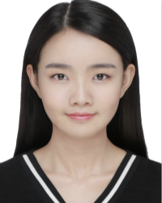

Yufan Liu
Info
| Degree | Master | Date of Enrollment | 2015 |
| fannie_lyf@buaa.edu.cn | Work Unit | Chinese Academy of Sciences Institute of Automation, Research Assistant | |
| Interest Fields | Saliency Detection, Video Coding | ||
| Address | MC2 Lab, Beihang University | ||
Yufan Liu received the B.S. degree in the electrical enginneering from Zhejiang University in 2015. She is now pursuing the master's degree with Beihang University. She has now released 4 top conference papers and 2 submitted SCI papers.
Her Publications
-
Yufan Liu, Songyang Zhang, Mai Xu, and Xuming He. "Predicting salient face in multipleface videos." In Proceedings of the IEEE Conference on Computer Vision and Pattern Recognition, pp. 4420-4428. 2017
| Download PDF | Download Database | -
Yufan Liu, Mai Xu, Chen Li, Shengxi Li and Zulin Wang. ""A novel rate control scheme for panoramic video coding."" In 2017 IEEE International Conference on Multimedia and Expo (ICME), pp. 691-696. IEEE, 2017.
| Download PDF | -
Mai Xu, Chen Li, Yufan Liu, Xin Deng, and Jiaxin Lu. "A subjective visual quality assessment method of panoramic videos." In 2017 IEEE International Conference on Multimedia and Expo (ICME), pp. 517-522. IEEE, 2017.
| Download PDF | Download Database | Download Code | -
Yufan Liu, Haoji Hu, and Mai Xu. "Subjective rate-distortion optimization in HEVC with perceptual model of multiple faces." In Visual Communications and Image Processing (VCIP), 2015, pp. 1-4. IEEE, 2015.
| Download PDF |